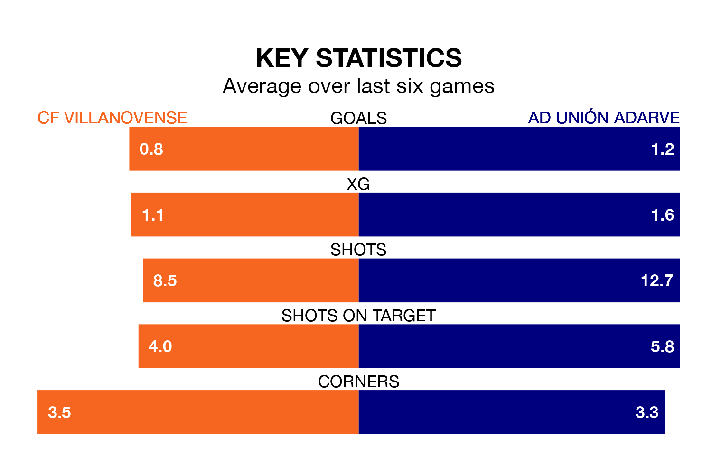

CF Villanovense host AD Unión Adarve on Sunday at the Estadio Municipal Villanovense in the Segunda División RFEF Group 5.
In their last league match, on April 6, Villanovense drew with SS Reyes 1-1 away, with their goal scored by Alberto Fuentes Gómez.
Unión Adarve also drew, 1-1 at home against CDA Navalcarnero on April 7, with Alberto Alburquerque Reus scoring their goals.
With 40 goals in 30 games so far this season, Unión Adarve are the league's third-highest scorers with 1.3 goals per game. But they are conceding more than average too, letting in 40 goals at a rate of 1.3 per game.
Villanovense, meanwhile, are below average scorers, with 1.0 goal per game, compared to a league average of 1.1. They have also conceded 1.0 goal per game.
The home side are in disappointing form in the Segunda División RFEF Group 5, with one win and two draws from their last six games.
With two wins and a draw over that period, the visitors' form is slightly better – they have taken seven points from 18, compared to Villanovense's five.
In the last three years, Villanovense and Unión Adarve have played each other on three occasions. Villanovense won one of them and they drew the other.
Their last meeting was on December 3, when they played out a 1-1 draw.
Villanovense are 11th in the table after 30 games, of which they have won 11 and drawn seven, earning 40 points.
Unión Adarve are two places ahead of the hosts in ninth, with 10 wins and 12 draws putting them on 42 points.
Updated: 11:20 (UTC), 09/04/24